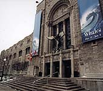
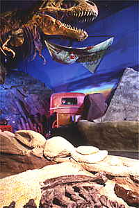

|
Позади остались две трудные недели.
Сколько их еще будет, не знаю. Но пока... утро понедельника, и я решила побыстрей
написать письмо, пока не началось (как в том анекдоте :). А начинается каждое утро,
собственно, одно и то же. Подключаюсь к интернету и вперед! Ищу места приложения своих
мозгов и отправляю туда резюме. И поскольку телефон почти весь день занят (из-за
интернета), то время от времени я бегаю к телефону и смотрю, не моргает ли оный. Если
моргает, значит, некто наговорил сообщение.
Здесь ведь автоответчик прямо на телефонной станции в Bell-компании (так что
специально автоответчик никто домой не покупает) (Комментарий от Андрея: на самом
деле, некоторые покупают автоответчики - потому как за него платишь один раз, а потом
все бесплатно, а такой автоответчик, как у нас - это сервисная услуга телефонной
компании, за которую нужно ежемесячно дополнительно платить - немного, но все таки.
Воти, некоторые и экономят. Нам, правда, только платный вариант и подходит, потому что
у нас телефон всегда занят. :). Автоответчик включается не только тогда, когда никого
нет дома, но даже тогда, когда телефон занят. Так вот... Если лампочка на телефоне
моргает, я отключаю интернет и слушаю сообщение.
Обычно их бывает несколько и все от рекрутеров (Андрей: я Наташе голосом не звоню -
все равно занято - а пишу письмо по электронной почте - вот так и общаемся днем :))).
Дело в том, что они как только получают письмо от работоискателя, сразу же звонят ему.
Во-первых, проверяют, а существует ли данный человек, во-вторых, им нужно пообщаться
со мной, дабы внести меня в свою базу данных, а в-третьих, они могут тут же пригласить
меня на интервью, ежели у них имеются в наличии соответствующие позиции. Position, или
opportunity, - это как раз и есть то, что я ищу, - то есть конкретная работа в
конкретном месте. Сообщения я слушаю долго, пока все толком не пойму: кто звонит,
откуда, какой у него номер телефона. Вначале для меня все это было ничего не значащим
набором звуков. И я звонила Андрюше на работу, чтобы тот попросил Тему послушать, чего
там мне наговорили. Ведь свой автоответчик можно прослушать из любого места. Главное -
знать пароль. А теперь я и сама просекаю, правда, не с первого раза :). Таким образом,
я выжимаю из телефона всю полезную информацию и прусь к компьютеру созерцать, а чего
я, собственно, им понаписала и на какую позицию эплаилась (apply) - подавала, или
претендовала. И только после этого, уже с осознанием дела, иду звонить, куда просили.
Иногда они, рекрутеры, опять спрашивают то, что я им уже написала в резюме, а иногда
назначают интервью. Например, на прошедшей неделе мне предстояло посетить в один день
аж два интервью, причем в одном и том же месте, но с разными людьми. Ведь там у них
каждый человек отвечает за свои позиции. И кто виноват, что мне приглянулись позиции
разных товарищей? Я по-честному сказала, что обязательно приду к 11, правда в 10 часов
я там же встречаюсь с другим человеком :). Короче, они скооперировались и провели
интервью вдвоем, чтобы не тратить ни мое время, ни свое. В подобных учреждениях,
кстати, весьма бережно относятся к твоему времени. Или, во всяком случае, стремятся
это показать, не забывая на своих интернетовских сайтах вставить фразу: мы ценим Ваше
время :). На самом же деле, это не всегда так. Я, например, терпеть не могу
специальные формы, выложенные на сайтах, которые якобы человек должен заполнить,
прежде чем подавать на какие-нибудь позиции. Вместо того, чтобы за 5 минут отправить
резюме с cover letter, ты сидишь, как дурак, и переписываешь все то же самое, что в
резюме, только в разные колоночки. Ненавижу! Однажды я полдня заполняла какую-то
форму, потом что-то в одном месте исправила, и мне ихний робот по новой предложил все
это дело заполнять. Зато я воистину почувствовала себя агрессивным девелопером, или,
как Андрюша прикалывается, злостным программистом :). На самом деле, agressive
developer - это вовсе не агрессивный, но действенный, активный девелопер :). Это,
кстати, позиция, на которую я претендовала, когда ходила на интервью в настоящую
фирму, не в рекрутерскую. Но там мне дружелюбно ответили, что у них очень маленький
коллектив, и по этой причине они очень тесно общаются, постоянно что-то обсуждая.
Дескать, мне пока будет трудновато. Но вот в июне они ждут меня с распростертыми
объятиями :). Шибко просили позвонить в июне. Как будто к июню я стану англоязычным
монстром :).
Вот таким образом и проходят мои дни... От компьютера - к телефону, от телефона - к
компьютеру... Правда, у меня такое ощущение, что я уже целиком вычистила все
рекрутерские сайты, и что разослала резюме уже во все конторы, e-mail-ы которых нашла.
В пятницу вот нацарапала в местные банки. Банки - большие конторы, там всегда кто-то
требуется. И платят там вроде нехило.
Андрюшенька, бедняга, тоже все дни в работе. Правда, ему за это еще и платят :). Все
вроде у него идет нормально. Плохо только то, что они с Темой работают над одним
проектом. Поэтому вместе сидят, и вместе обсуждают сей проект. Естественно, на
русском. А таким путем не шибко-то повысишь уровень английского. Хотя, конечно, с
другими людьми он тоже на работе общается. И английский, в любом случае,
прогрессирует.
Вообще, мы, как можем, стараемся. Смотрим фильмы по телевизору. Правда, здесь почти
все фильмы идут с титрами (английскими, разумеется), которые отвлекают. Иной раз,
вроде и говорят понятно, а все равно смотришь на тиры, дабы чего-нибудь не пропустить.
Их, конечно, можно отключить, но пока не хочется. Боимся, что немного поймем с
отключенными-то титрами :). Читать ведь всяко легче, чем воспринимать на слух. Я вот
купила себе Агату Кристи почитать. Опять же пора бы уже прочесть правила дорожного
движения да пойти сдать на права категории g1. Права - это один из двух документов,
где прописан адрес человека (Андрей: это полный прикол - в правах напечатан твой
адрес! То есть если куда-нть переезжаешь даже на той-же улице - права нужно идти и
получать заново!!! :). Посему они нужны не только для того, чтобы водить машину :).
Второй документ - это медицинская карточка. Но ее мы получим только 29 апреля, то бишь
через три месяца после нашего приземления в Канаду.
Эх! Времени не хватает просто катастрофически! И то надо, и другое... Еще этот
английский, черт бы его побрал :). На самом деле, мы вот раньше не знали, а английский
- довольно-таки образный язык. Например, в некоторых конторах, когда человек приходит
на работу раньше, чем положено, он берет ключи в специальном ящичке, который носит
название "ранняя пташка" :). И это формальное название. Или, например, меня просветила
Наташа Ершова, которая готовилась к медицинскому экзамену, что у них язвенная болезнь
называется (как бы не соврать) heart-burn - типа жгущееся сердце. Ведь при язве
действительно такое ощущение, что жжет сердце. Симптомы прям в названии!
Вообще-то нас с Андрюшей понимают достаточно хорошо и почти всегда сразу. Плохо
понимает меня почему-то только наша суперинтендантша полька (Андрей: да у нее у самой
такоооое произношение, что лучше-б она вообще молчала! :). Особенно когда я ходила к
ней жаловаться, что у нас унитаз засорился по неизвестным причинам.
Сначала я долго выискивала в словаре слово "унитаз". Ничего кроме lavatory pan (этакая
туалетная ваза) я не нашла. И хотела сначала справиться своими силами. Андрюше-то
хорошо, - он ушел с утреца на работу, а у меня тут унитаз толком не смывается, и
норовит все выплеснуть обратно. Пошла я в ближайший возле дома хозяйственный магазин и
говорю, что нужен мне дескать девайс для чистки унитаза, того самого пэна. Как эта
приблуда называется, я и по-русски не знаю, а уж как по-английски... :) Сначала меня
продавец подвел к чистящим средствам. Да нет, - говорю, - ДЕВАЙС. Потом продавец
направил мой взгляд на разнообразие унитазных щеточек... Ну что ты будешь делать?.. Я
лихорадочно стала ворошить свою базу данных на предмет слова, которое бы однозначно
определяло то, что мне нужно. Тут я вспомнила, или мне показалось, что, пардон, на
презервативах я как будто видела слово не то rubber, не то ribbed, не то оба сразу :)
Это, наверное, резина, - подумала я и осторожно произнесла нечто среднее :). Странно,
но продавец словно этого слова и ждал. Мы отправились в помещение ниже этажом, где без
труда отыскали нужный мне предмет, - то бишь палку с резиновым наболдашником. Вот
только, как ей пользоваться (в отличии от презервативов), я толком не знала. Посему
долго мучила и себя, и унитаз. Плюнув в последний, я пошла к суперше. На мое
изысканное "lavatory pan" она ответила вопросом "what?" :) И так 5 раз. "A! Toilet!" -
быстро догадался Штирлиц. "Я, я, натюрлих, он самый, тойлет!" :))
Потом из моих уст посыпались объяснения, что же с сиим тойлетом произошло. Если их
дословно перевести на русский, получится следующее: Я полагаю, мой туалет собирается
забиться. Во всяком случае, когда я в него что-либо бросаю, оно там не скоро исчезает.
:) Суперша подозрительно заметила: мож ты туда чего не то бросаешь? - и послала ко мне
своего мужа Богдана, на ответственности коего здесь и унитазы, и лампочки, и столярные
дела и т.д. Но слава богу, все хорошо, что хорошо кончается! Ночная ваза была
исправлена! :)
А тут на днях опять несчастье! Что-то, видно, случилось с какой-то трубой, и у нас
прям внутри стены в ванной текло. Опять пришлось привлечь супершу к поиску источника
воды. А сейчас, похоже, надо к ней идти и спрашивать, собирается ли она ликвидировать
образовавшиеся на стене пузыри. Ну да ладно. Это все бытовуха. С кем не бывает? :)
Пора бы осветить и культурные мероприятия... :)
Посетили мы еще один кинотеатр. Тоже весь из себя красивый, с большим экраном! И с
сиденьями, слава богу, не лежачими :). Фильм назывался "Wing commander". На сей раз с
сюжетом, который, на мой взгляд, с натягом вырисовывался сквозь бурные межзвездные
полеты. :) Но, собственно, ничего другого я и не ждала. Зато Андрюше сей фильм шибко
понравился! :) На сей раз мы решили сходить в кино по полной программе и, как истинные
буржуи, купили мешок с попкорном и пол-литровые стаканы с крашем и трубочками.
Полфильма мы все это жрали и пили, в результате чего я начала испытывать естественную
нужду и решила на недолгое время отлучиться :). Здесь это, оказывается, без проблем:
захотел - вышел, захотел - вошел, главное - билетик при себе иметь. Надо сказать, что
эта отлучка на меня произвела большее впечатление, чем сам фильм. У меня было чувство,
словно я герой фильма "Звездных войн". Типа летала-летала меж звезд и планет и потом,
как бы между прочим, зашла в бар - команду подсобрать, как Люк Скайокер. Оказывается,
пока длится фильм, в вестибюле жизнь бурлит полным ходом. Все вокруг мигает, вертится.
Продавцы стоят за стойками и продают тот же попкорн с напитками. Чуть поодаль столики,
народ сидит расслабляется, попивая, видимо, чего-то покрепче и чего-то посолидней
поедая (Андрей: ну, покрепче здесь пьют ТОЛЬКО в ресторанах - в остальных местах
просто запрещено - в кинотеатре даже пиво не продают, паразиты! :). Я бы ей-богу, не
удивилась, если бы встретила здесь потусторонних созданий типа того мохнатого товарища
из "Звездных войн" или робота типа "R2D2" :). (Андрей: а жизнь кипит по очень простой
причине - здесь кинотеатр - это целый комплекс, и кинозалов в нем обычно не меньше
десятка. В том. где мы были - толи 12, толи 14 залов. Ну и время начала сеанса у всех
разное - вот жизнь и кипит постоянно :)) Короче, мне даже не хотелось обратно
возвращаться, фильм досматривать. А Андрюша и Ершовы - глупые, не испытали подобных
ощущений :). Сидели и весь фильм таращились в экран :). Наташке, правда, фильм тоже не
особенно приглянулся. Такое надо или в 3D-кинотеатре смотреть или самому играться за
компьютером (Андрей: о чем я и сказал сразу после фильма - про компутер - у нас дома
почти такая-же игрушка про космические бои есть :).
Короче, в следующий раз я хочу на фильм более драматический, - чтобы не возникало
желания поблуждать по вестибюлю, представляя себя бойцом невидимого фронта :). И
попкорн с питием больше брать не надо. Пущай другие всем этим добром насыщаются :).
А в прошедшее воскресенье мы наконец сходили, вернее съездили с Ершовыми, в парк.
Погода потеплела, солнышко припекает, - кайф. Нарядились мы в недавно купленные легкие
куртофанчики. Пофотографировались от души. Парк тянется вдоль некоего водоема, в
котором плавают дикие гуси и лебеди, а народ их подкармливает. Кое-кто
расположился на травке, с которой совсем недавно сошел снег, но которая уже успела
нагреться. Лежат, загорают. Кто-то просто прогуливается вдоль озерка, кто-то гоняет на
велосипедах, кто-то на роликах. Потом мы плавно перебрались за проезжую часть и вышли
прямо к озеру Онтарио. Здесь масса лавочек, большое количество всяких горок для детей,
огромная площадка для конькобежцев на роликах.
Я попробовала покататься на Наташкиных роликах. Бывает цирк на льду, а это, наверное,
был цирк на колесах :). Но для первого раза получилось неплохо. Видно, сказываются мои
попытки детства стать фигуристкой :). Правда, на
роликах кататься сложнее, чем на фигурных ледовых коньках. Меньше возможностей
маневрирования. На льду ты как хочешь, так и разворачиваешься, а здесь едешь туда,
куда колеса несут :). Но я думаю, через недельку тренировок я бы уже не уступала
народу, катающемуся легко и красиво (Андрей: ндааа... Сомневаюсь - канадцы на коньки
становятся с 3-летнего возраста - и всю жизнь катаются. У них-же хоккей и фигурное
катание - национальная гордость. Они тут все поголовно на коньках гоняют). Ноги у меня
устали с непривычки просто страшно. Рухнула я на лавочку и говорю: давай, Андрюша,
ролики купим. А они все (с Ершовыми) давай смеяться. Они, оказывается, сидели и
спорили. Думали, я вернусь с площадки и скажу: а ну их нафиг, эти ролики! Да не тут-то
вышло! :) Андрюша, правда, даже пробовать прокатиться не хочет. Утверждает, что он и
на льду-то не особенный фигурист. Зато он запал на велосипеды! (Андрей: Вах!!!!!!!!!!
Какие здесь велики попадаются!!!!!!!!! Просто мечта идиота!!! Я понял, что я в детстве
не накотался на велике, и что безумно хочу купить велики. Вобщем, мы решили, что как
только купим машину - сразу-же и пару великов купим. Просто без машины велики не имеет
смысла покупать - тут система такая: велики крепят на машину (сверху или сзади) - и
едут в какой-нть парк - обычно довольно далеко. Например, от нашего дома до
достойного катания парка - километров 20. Те парки, что близко - маленькие, кататься
не интересно :) И решили мы чуть попозже приобрести велосипед и ролики, чтобы всем
было хорошо! :) Короче, прогулка в парке доставила нам, особенно мне, истинное
наслаждение. Надо по выходным туда обязательно выбираться.
Кстати, я тут упомянула цирк на льду. Так вот две недельки назад ездили мы на
программу Московского цирка на льду. Во как! :) Правда, странным составом: Костя
Тесленко с дитями, Наташа с сыном и я. Андрюшу и Тему уговорит не получилось :). А
зря, ибо программа была классная. Красивые костюмы, достойные выступления! Бедно
только выглядела продажа матрешек в антракте. Народ привык, что в перерывах между
зрелищами здесь чего только не продают! Ну и когда сказали перед антрактом, что там-то
и там-то русских матрешек давать будут, все туда ломанулись. И никто не думал, что
речь стоило понимать настолько буквально. Маленький столик с матрешками - и все! И
ничего больше! Могли бы уж порадовать канадцев и другими сувенирами. Хотя матрешек
тоже активно разбирали :). Видно, за неимением лучшего... :)

На тех же выходных были мы с Андрюшей в здешнем музее. Royal Ontario Museum. Созерцали
там скелет тиранозавра, а также отдельные кости и черепушки других динозавров. Этим,
конечно, список экспонатов Онтариевского музея не ограничивается :), просто нам очень
хотелось посмотреть именно это. Вообще-то музей красивый. Там много разных выставок и
уровней. Есть выставка чучел животных. В этом смысле, зоопарк, конечно, лучше,
поскольку животных жалко, несмотря на то, что чучела ужасно красивые - прямо как

живые. И львы, и тигры, и волки... Есть искуственный лес, к которому чем больше
приглядываешься, тем больше животных отыскиваешь: оленей, белок, бурундуков... Есть
искуственная пещера якобы с летучими мышами, объемы которой придают в нужных местах
установленные зеркала, а эффект полета мышей создает специальное импульсивное
освещение. Есть там целые диарамы с животными: типа половина животного сделана, а
половина нарисована. Андрюшу в одной из подобных диарам заинтересовала вода. Небольшое
озерцо воды, которая выглядит как настоящая, но нельзя дотянуться, чтобы пощупать.
Интересно, - говорит Андрюша, - настоящая это вода или нет, - а... нет, не настоящая -
вон на поверхности монетка лежит. - Народ уже проверил :)).
Один из уровней посвящался древним экспонатам: мумиям, а также древней, найденной при
археологических раскопках, посуде. Здесь наш Андрюша заскучал. Не испытываю, -
говорит, - я трепета перед тем, что можно сделать и сейчас, но гораздо лучше. И что
смотреть на эти чашки? Пошли отсюда да пошли. Черт дернул случиться нашему спору возле
некоей древней сковороды. Будешь, - говорит, - еще сковородки разглядывать? У нас дома
тефлоновая сковорода куда красивее :)) .
Шибко анонсировали рыцарские доспехи! А оказалось, что все доспехи - в единственном
числе, и то под стеклом и привезенные из Европы :). Ну откуда в Америке взяться
рыцарям? :)
Завершающим аккордом нашего путешествия по музею был ланч и посещение магазина. Надо
сказать, что здесь всегда есть возможность перекусить. Такой пищи, как в российских
столовых: жидкого, горячего и прочего, - здесь не подают. Для этого существуют
рестораны. А это - забегаловки. Чтобы быстренько перекусить и бежать дальше. Для нас с
Андрюшей, правда, пока остается загадкой, как можно быстренько перекусить сооружение
из двух кусков хлеба, между которыми навалено начинки не меньшего объема, чем эти два
куска. Я лично сей бутерброд как не приминаю, а в рот засунуть не могу. Посему верхнюю
хлебную крышку я снимаю за ненадобностью, а все остальное худо-бедно пытаюсь внедрить
в ротовое отверстие :). Ведь ножей с вилками для поедания подобного блюда не
прилагают. Вернее, вилку, конечно, взять можно (здесь вся посуда одноразовая), но ей
без ножа немного наковыряешь :). В специальных формочках дают салаты. Формочки делятся
на small, medium и large. Поскольку мы были голодны, Андрюша попросил большую порцию
салата (Андрей: точнее, я ХОТЕЛ попросить большую, но потом понадеялся, что хватит и
средней :). Я готовилась сделать свой заказ, и по мере того как ему накладывали салат,
глаза мои расширялись все больше и больше. Я понимаю, большая порция, но не настолько
же! (Андрей: это какой-то ужас! Она, эта тетечка, взяла какую-то почти кастрюлю
пластмассовую, и как давай мне туда наваливать салата!!! И это еще только СРЕДНЯЯ
порция!!! :))) И когда тетенька схватила такую же формочку, дабы навалить салату мне,
я в ужасе закричала, что мне нужно гораздо меньше :). А вообще, мы дураки, так как с
другой стороны прилавка, как оказалось, все эти салаты уже были расфасованы по разным
формочкам. Выбирай, какую нравится, и иди к кассе. А мы зачем-то тетечку напрягали :).
Которая тем не менее была очень приветлива и с радостью была готова услужить :)
(Андрей: могла бы и послать нас... По крайней мере, в Новосибе обязательно бы
послали... к уже расфасованным салатам :)))
В магазине при выставке чего только не продавалось. Но мы не стали тратить много
денег, а купили только маленького динозаврика и маленькую пантерку - резиновых, чтобы
поставить их возле компьютера.
Вот, вроде, и все развлечения. Чего бы вам еще написать? Прикупили мы кое-какую одежку.
Неправду говорят, что на западе не во что одеться. Были бы опять же деньги :) и
желательно вкус. А купить можно все: любой фасон, любой цвет и размер, в любых
комбинациях. Конечно, не все молы одинаковы. Например, как утверждает Андрюша, в
районе, где располагается его контора, молы гораздо беднее и соответственно дешевле.
Может, это потому, что там преимущественно черный район, в смысле, много негров.
Что касается пищи, то приходится нам пока увязываться за Ершовыми. Каждый раз, правда,
неловко падать к ним на хвост, да и не всегда мы синхронизируемся. Например, у нас еще
много продуктов, а у них кончились, или наоборот. Частенько мне приходится ходить в
магазин самой. Андрюша-то на работе. А относительно дешевый магазин, как я уже писала,
далековато от нашего дома. Наташа Ершова, добрая душа, подсказала мне прикупить
тележку на колесиках, что я, дурочка, и сделала. А было это так. Пошли мы как-то
вечером, еще по зиме, с Андрюшей в магазин, тот что далеко. Андрюша, правда, гундел,
ссылался на то, что устал после работы, но я была неумолима :). Сказала, что вот купим
там тележку, и я не буду больше его мучить. Набрали мы в том магазине жратвы, свалили
ее в там же купленную тележку, и Андрюша повез все это дело к выходу. Но как только он
миновал двери магазина, тележка почему-то резко перестала его слушаться. Со стороны
это выглядело очень странно. Казалось, что мужчина всячески увертывается от тележки, а
она настойчиво на него наскакивает. Он опять увертывается, она опять наскакивает. В
результате сиих маневров Андрюша умудрился упасть, что сделала и тележка, живописно
разбросав вокруг Андрюши все свое содержимое. (Андрей: нифига-себе -- упасть! Я не
упал! Я просто ОБВАЛИЛСЯ, а сверху на меня грохнулась еще и эта идиотская телега, будь
она проклята!!! У нее ручка очень короткая, и когда я ее вез, она постоянно наезжала
мне на ноги, НО Я-ЖЕ ЭТОГО ЕЩЕ НЕ ЗНАЛ!!! А она уже наехала!... Вобщем, я теперь ближе
5 метров к этой дурацкой телеге не подхожу, будь она не ладна! :)))))))))))) Мне
смешно, я не могу (сейчас вот пишу и ржу :), а он, Андрюша, в смысле, злится и прям
как в том фильме про охоту неустанно повторяет фразу: "Вот сволочь, а! Ненавижу эту
сволочь! Сама кати свою тележку!" А я что? Я, собственно, и собиралась ее катить. Я не
знаю, зачем он взялся ее везти. Уняв колики, я переняла эстафету и только тогда
поняла, насколько нелегкое это дело - катить тележку. Дело в том, что ни мне, ни тем
более Андрюше, эта тележка совсем не подходила по росту. Когда я везла ее впереди
себя, то становилась похожа, по Андрюшиным словам, на сгорбленную баушку. Когда же моя
спина совсем уставала от подобных измывательств, я менялась с тележкой местами и
пыталась ее тянуть за собою (как, впрочем, и надо). Но, во-первых, спина моя при этом
выгибалась в обратную сторону (и я походила на плохую спортсменку художественной
гимнастики, тщетно стремящуюся встать на мостик), а во-вторых, выпадая из моего поля
зрения, тележка начинала шарашиться на своих двух колесах из стороны в стороны, видимо
имея дерзновение уронить и меня :). Однако, мне все еще было смешно, чего нельзя было
сказать об Андрюше. Похоже, он настолько близко к сердцу принял пережитое, что смотрел
на тележку, а заодно и на меня, как на врага народа. От этого становилось еще смешнее.
И мы еле докатились до дому, еще раз рассыпав по дороге все свои съестные припасы. И,
честно говоря, больше я никуда не ходила со своей тележкой. Стоит она у нас в уголочке
на кухне и до сих пор вызывает неадекватные реакции: у меня - припадки смеха, а у
Андрюши - приступы ненависти. Вот такой вот вышел у нас курьезный случай :). Выводы,
конечно, напрашиваются сами собой. Во-первых: жрать надо меньше. А во-вторых: нужна
машина :).
Кстати, еще об еде. Здесь ужасно вкусные пиццы. Новосибирская Нью-Йорк пицца по
сравнению со здешними - сушеная фигня! И даже те пиццы, которые мы
имели счастие отведать в Новосибирском ресторане "Венеция", тоже не идут ни в какое сравнение.
Я
даже и не знала, что пиццы бывают такими вкусными - мягкими и сочными. Это мы вчера
после прогулки по парку заказали пиццы по телефону. Пальчики оближешь!
А теперь еще маленько не об еде. Украшаем по-немногу квартиру. Ту картину с морским
пейзажем я, конечно, не купила, но предусмотрительно оставила на стене место под что-
нибудь подобное :). А вообще, я набрала рамочек, открыток разных, сделала из них
картины и навешала на стены. Зал сразу принял уютный и стильный вид! Прямо аж душа
радуется! Также я приукрасила кухню. Туда я сделала картины из пенопласта с открытками
(такое создается впечатление, будто это картины на мраморных плитах), украсила
холодильник и наклеила розочек по верху кухонных шкафов, типа бордюра. Коробка была у
нас из одного магазина, вся сплошь усеянная розочками. Мне стало жалко ее выбрасывать,
и я нашла ей применение. Дело было вечером, делать было нечего... Андрюша, как обычно,
уставился в компьютер. А я навырезала розочек и давай их расклеивать. Пришел Андрюша
на кухню в холодильник заглянуть, а я стою на стульчике и монотонно прилепляю розочки
к шкафам. Он даже лоб мой потрогал, подумал почему-то, что со мной не все в порядке
:). А не дождешься, говорю, дурдомов-то тут нету! :) Зато теперь кухонка приобрела
веселенький вид! :) Надо сказать, что здесь сейчас мода на все старое. Новое и не
тронутое временем как бы не в ходу. Вплоть до того, что из нового стараются сделать
старое разными путями: например, покрасят, а потом какой-нибудь цепью и наждаком
перекорежат :). Кошмар! Мы, конечно, до подобных измывательств над мебелью не дошли
:). Да и не нравится мне такое. А народ так некоторый вполне следует моде. Даже по
телевизору показывают, как попуще мебель поизнахратить :)...А как здесь дерево
превозносят! Высший шик, - это когда на улицах заборы просто из корявых неотесанных
бревен. И ни в коем случае не покрашенных. :) Мы сначала думали, что это типа на
скорую руку соорудили, пока хорошую ограду не сделают. А потом нас просветили, что
это, оказывается, так и задумано. Специально сделанный покрашенный забор - это типа
дешевка, фигня. А вот таких трухлявых дубинок наложить - это паачетно! :) (Андрей: тут
специальные технологии разработаны - как из нового дерева сделать по виду - старое и
трухлявое. Самый крутой писк моды и крутизны - это, например, стулья - старые,
ободранные, с облупившейся краской, с заусеницами деревянными. Вобщем, в России обычно
такая медель очень часто на дачах встречается - туда обычно свозят старую, но еще не
развалившуюся мебель. Так вот здесь такая - старая - мебель стОит раза в два дороже
новой, чистенькой и гладенькой :) Идиоты, одно слово! :)))
Счастливо!
Следующее письмо- Письмо 7
|